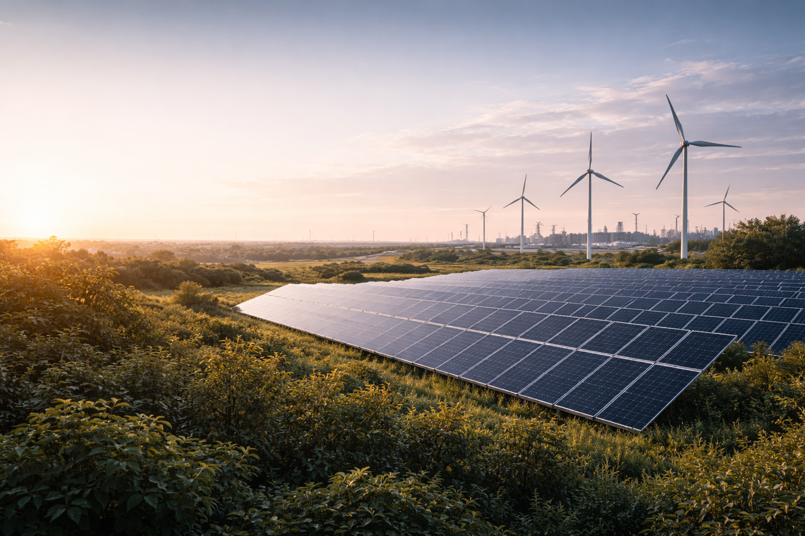

Çatı ve arazi tipi Güneş Enerjisi Santralleri ile kendi enerjinizi üretin, maliyetleri sıfırlayın.
Elektrik maliyetlerinin artması ve "Lisanssız Elektrik Üretim Yönetmeliği"nin sağladığı kolaylıklarla, GES yatırımları artık bir tercih değil, ekonomik bir zorunluluktur. Kurumunuzun çatısına veya farklı bir dağıtım bölgesindeki arazinize kuracağımız santralle, tüketiminizi mahsuplaşıyoruz.
Şebekeye bağlı sistemlerdir. Üretilen fazla elektrik şebekeye satılır, eksik kısım şebekeden alınır (Mahsuplaşma).
Şebekeden bağımsız, akülü (depolamalı) sistemlerdir. Elektrik hattının olmadığı tarımsal sulama ve yayla evleri için uygundur.
Güneş ve Rüzgar enerjisinin birlikte kullanıldığı, enerji arz güvenliğini artıran entegre sistemlerdir.
Sadece kurulum yapmıyoruz; santralinizin uzaktan izlenmesi (SCADA), periyodik bakımı ve üretim performans garantisini de veriyoruz. Yatırımınızın geri dönüş süresini (ROI) fizibilite raporumuzla garanti altına alıyoruz.
Teklif Alın